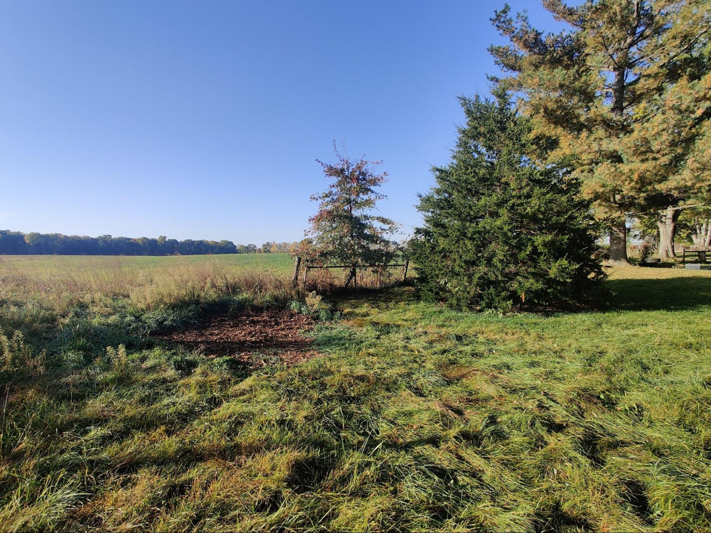
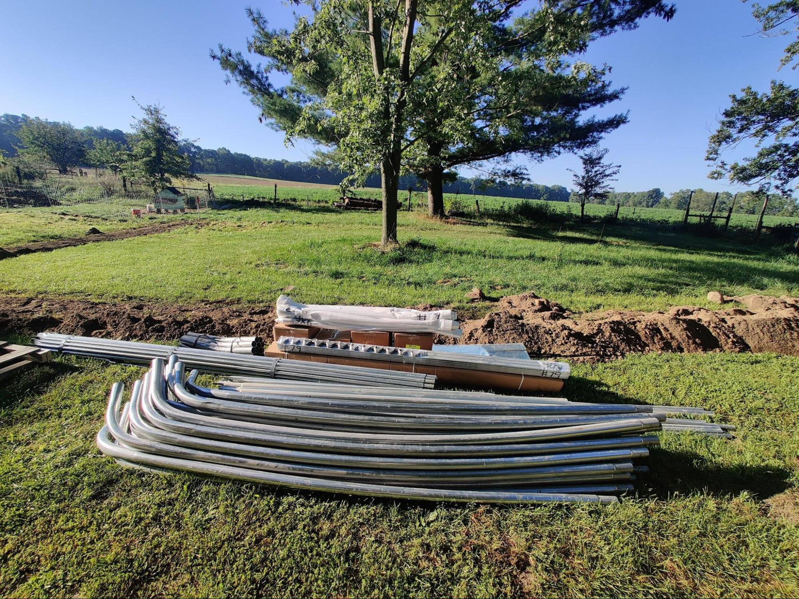
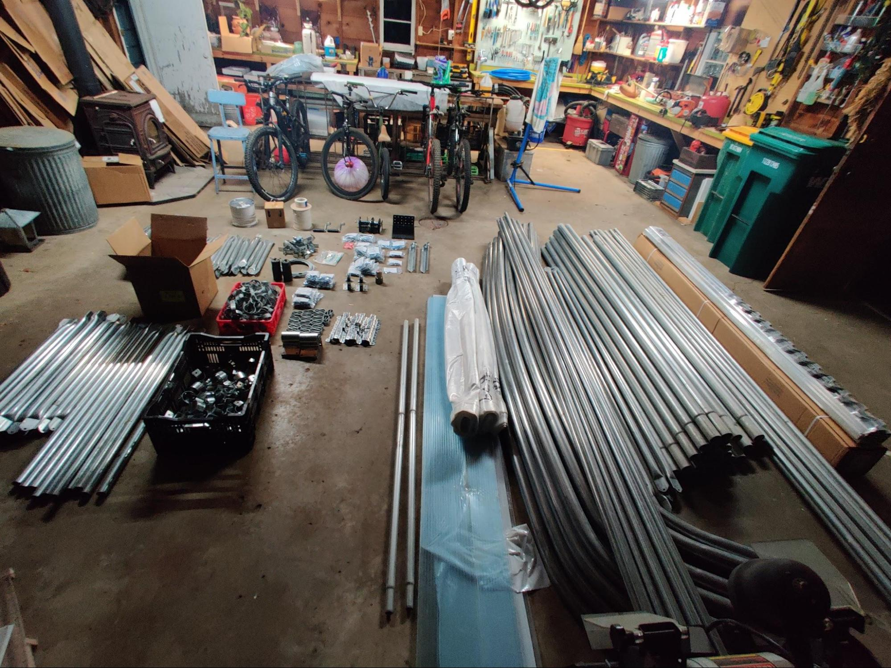
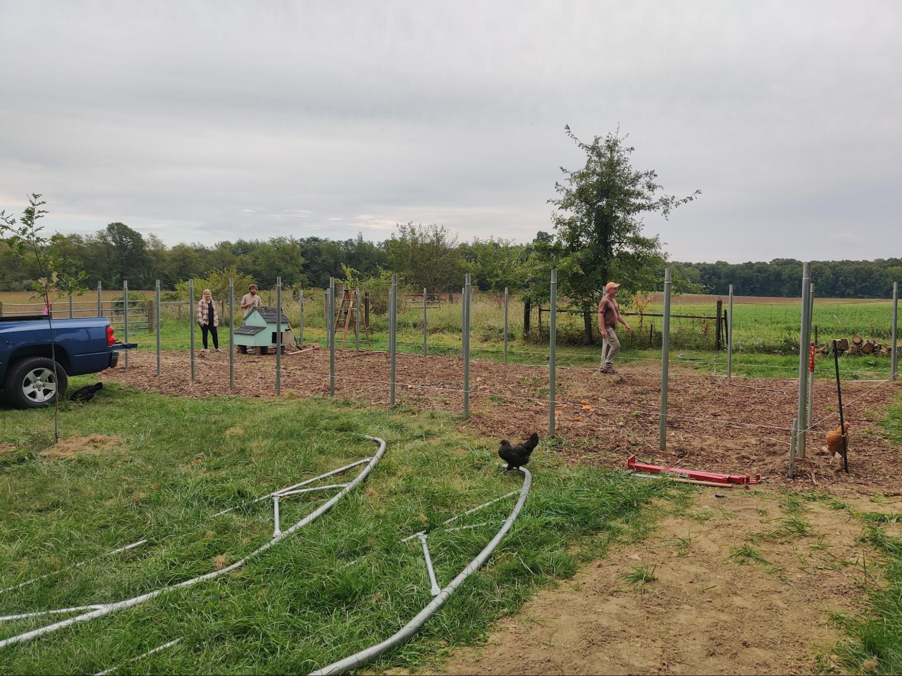
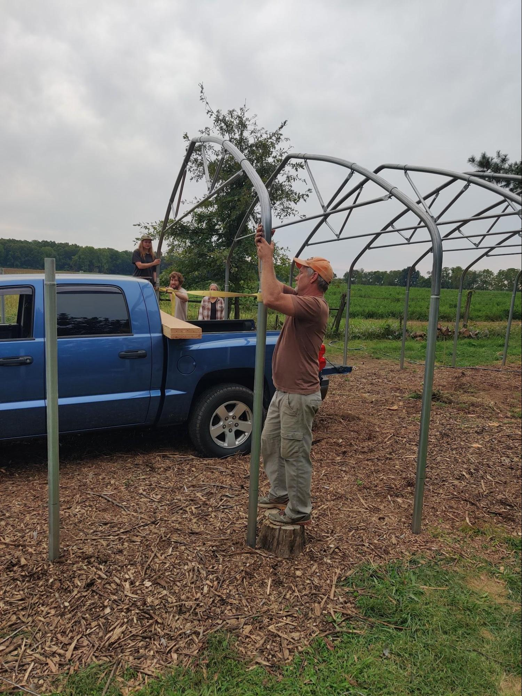
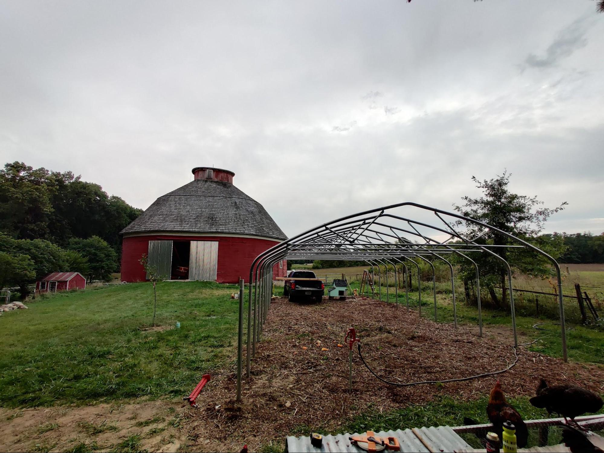
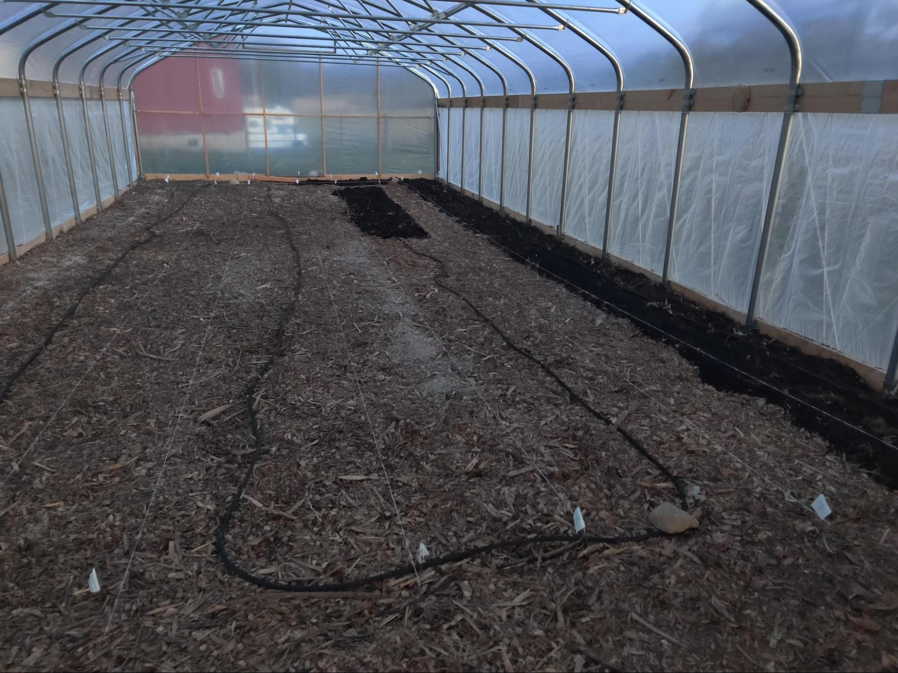
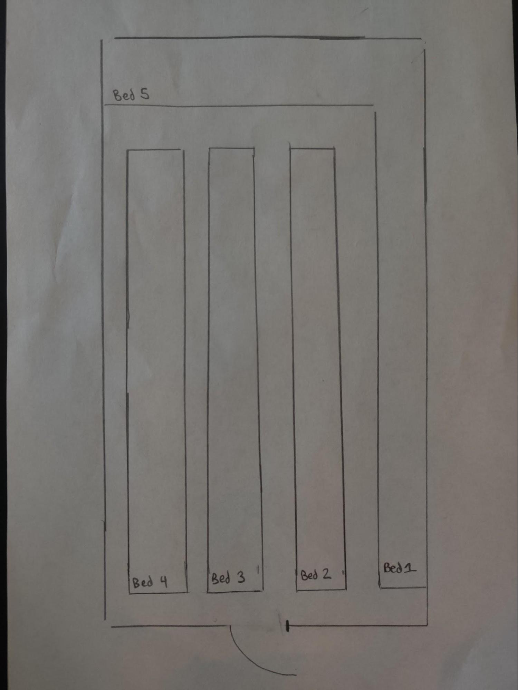

When we first moved onto our farm, the previous owners were so gracious in showing us the space, sharing their knowledge and helping make the transition from one steward to the next easier. One of the things they shared with us was the information about a High Tunnel Grant with our local Marshal County USDA office. This office is shared with St.Joseph county and offers the same grant program. They gave us the contact information and away we went down this rabbit hole! Turns out, the local branch is super passionate about the local food systems and supporting the smaller homesteads in the area, and one way they are doing this is by covering 70%-80% of the cost of a new high tunnel!
The size, location within the property, and even where to purchase a high tunnel, are all variables that have to be decided by the homeowners, with some support from the office. This is our experience with the process:
The application window runs from March-November with a decision made and announced the following March. We turned in our application around October of 2022 and heard back that we were approved in April of 2023. From there, we met on site to look at possible dimensions and talk through some beginning steps for the process.
We decided to go with a 48 ft x 20 ft high tunnel for our property because that was the largest size we could reasonably fit in the limited open space we have. You see, while we have 3.5 acres to the property, the available growing space for this high tunnel was limited by current buildings and garden spaces, a septic field, and driveways for access around the property. Our desired dimensions then dictated the amount of money we were approved to spend for the high tunnel ($7,020). This meant that we could spend as much as we wanted on a high tunnel, but the total amount they would contribute to the cost would be $7,020.
The grant is set up as a refund program where the homeowners have to purchase the high tunnel ahead of time, set it up and pass inspection, then they receive the grant money. We were able to work with the office and receive 50% of the funds up front to help cash flow this very large purchase a little faster. The next step, save $3,500 so we can order the kit…
When shopping for the kit, it could be described as comparing apples to bananas to oranges because every kit came with different parts/ specs/ varying quality. And, the amount the USDA quoted for the high tunnel was on the low end of the market. We looked into the following companies:
It ultimately came down to Zimmerman and Morgan county because they were close to our budget and seemed of high quality. Ultimately, we went with Morgan County seeds because theirs is based on Zimmerman but with some improvements.
For our kit we chose the following:
Total high tunnel cost: $6,970
September of 2023, our high tunnel kit arrives!! This kit came in a delivery van in hundreds of pieces which I had to hand unload because we don't have a tractor. I am very thankful for the driver in his patience with me while I hustled to get this kit unloaded. Next steps, get it organized in the garage and check the parts list to make sure nothing is missing. We had 1 week to report back to the company if we were missing anything.
 The kit sat in our garage for a week while we read over the instructions and began to wrap our minds around this large construction project! If you are not a DIY person, most companies we looked at offered installation at an additional cost. We quickly realized that while the high tunnel supplies were of high quality, the instruction packet was very lacking and confusing. Thankfully, Gibson was able to pick his way through the process and figure it out as he went.
The installation overall took about 1 month total. This was mainly Gibson and I working a few hours after work as sunlight allowed and family coming two Saturdays for the heavy lifting. Remember, it's October and the cold was quickly setting in.
   We got the tunnel up and inspection passed in late October and then hibernated inside for the winter. Sorta. Now we get to lay out the beds. The high tunnel did come with one requirement in regards to growing- it must be an in-ground garden. For most, that will not be a problem, for us though, it took some serious soil building because our property is sand, everywhere. We went with the following layout to maximize growing space while also keeping it reasonable for working and maneuvering a wheelbarrow.
To prepare the ground where the new garden will be, we had mulch spread over the space for 10-12 months to cook the soil and suppress as many weeds as we could. This worked pretty well, with only some grass coming in from the edges outside the tunnel. From there, we built on the lasagna gardening method by layering compost on top of the mulch where the growing beds were stringed out. The walkways received a fresh mulch layer as needed. We never dug the soil or sprayed, because this would bring weed seeds to the surface or contaminate our soil.
Overall, we are so thankful to have this high tunnel and we planted out our first high tunnel garden on January 23rd of 2024! The season extension this high tunnel allows us is a game changer. As of February, I have the following growing in the garden:
Highlights: